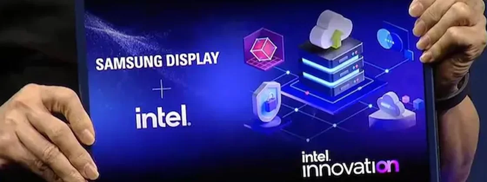

Samsung e Intel revelam híbrido de PC/tablet com tela deslizante

Durante o evento de inovação da Intel, foi apresentado o protótipo de um dispositivo que desliza de um tablet de 13 polegadas para um PC com tela de 17 polegadas. A apresentação foi realizada durante uma palestra do CEO da Samsung Display, JS Choi.
O protótipo apresentado pela Samsung Display, em parceria com a Intel, revela um tablet de 13 polegadas que usa um mecanismo deslizante para se transformar em um PC de 17 polegadas com tela flexível. A Intel é responsável pelo Unison, um software que conecta computadores que usam a tecnologia Intel a diferentes smartphones, como dispositivos Androids e iPhones.
Aparentemente, a Samsung Display começará a implementar a tecnologia deslizante com mais frequência, já que o executivo sugeriu que as telas dobráveis não devem durar muito tempo no mercado de PCs.
Display deslizante
“Estamos anunciando a primeira tela deslizante de 17 polegadas do mundo para PCs. Este dispositivo irá satisfazer várias necessidades de uma tela maior e portabilidade também”, disse Choi durante o evento.
De qualquer forma, o PC deslizante ainda é apenas um protótipo e nenhuma das companhias revelou previsão para a novidade se tornar realidade entre os consumidores